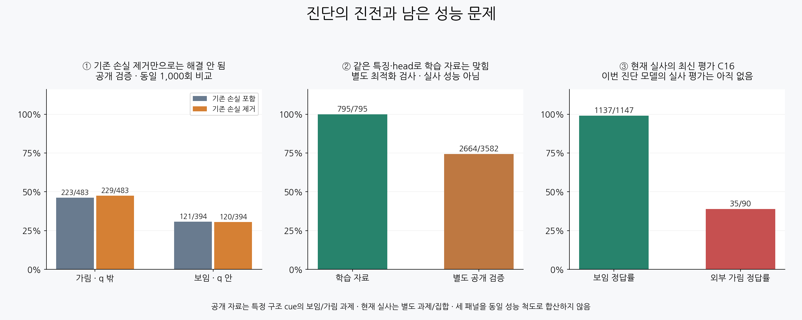

원인 진단은 진전됐고, 외부 가림 성능은 아직 부족합니다
성공 가능성을 더 검증할 근거는 있습니다. 다만 현재 실사의 외부 가림은 35/90개만 맞혀 신뢰할 수 있는 해결책을 확보했다고 말할 단계는 아닙니다.

공개 검증과 현재 실사는 과제와 집합이 다릅니다. 위 수치를 한 성능 추세로 연결하거나 합산하지 않습니다.
이번에 확인한 것
기존 목표들이 새 가림 판단을 방해하는지 보려고, 동일한 데이터·초기 모델·배치·1,000회 학습에서 기존 손실만 제거했습니다. 공개 검증의 어려운 가림 정답은 223→229/483, 어려운 보임 정답은 121→120/394였습니다. 이 변경만으로 해결되지 않았습니다. 비교는 양쪽 고정1,000회이며 부차적인 selected900 결과를 섞지 않았습니다.
그다음 같은 특징과 head가 학습 자료 자체를 맞힐 수 있는지 별도 최적화 검사로 확인했습니다. 795/795개를 맞혔습니다. 이 유한 학습 자료를 맞히지 못하는 것이 근본적인 한계라는 설명은 지지되지 않습니다. 그러나 이 검사는 정규화 없는 적합 능력 진단이며, 기존 실험과의 단일 요인 성능 비교가 아닙니다.
별도 공개 검증에서는 여전히 틀리고, 틀린 답에도 큰 확신을 보였습니다. 학습 자료는 6개 구조 cue와 3개 원본에서 만든 변형입니다. 원본 장면과 구조의 다양성, 특정 목표 구조와 가림체의 위치 관계를 새 장면에서도 구별하는 능력이 남은 검증 대상입니다.
별도 적합 능력 검사의 결과
‘가림·q 밖’은 목표 구조가 가려졌지만 초기 좌표 q 자체는 가림체 밖인 경우입니다. ‘보임·q 안’은 가림체가 q를 덮어도 목표 구조는 보이는 경우입니다. 단순한 q 픽셀의 소유 여부와 구별하려는 조건입니다.
공개 자료의 합성 가림 및 조건부 구조 cue 라벨입니다. 수천 개의 독립 자연 실사 정답이나 native8 키포인트 정답을 확보한 결과가 아닙니다. 학습 예정846개 중 입력을 사용할 수 없는51개는 U로 남기고795개만 최적화했습니다. 검증3,582개는 모두 입력이 유효했습니다. 검증 라벨은 최적화나 체크포인트 선택에 쓰지 않았습니다.
현재 실사의 최신 평가: C16 유지
합계 보임 1,137/1,147 (99.1%), 외부 가림 35/90 (38.9%)입니다. 외부 가림55개를 놓칩니다. 이번 C17/C18/적합 검사 head로 현재 실사 평가를 새로 돌리지 않았습니다. 자기 가림은 초기 기하에서 처리한다는 방침을 유지합니다.
C16 실제 crop 성공·실패 및 전체 외부가림90개 갤러리
성공 가능성과 다음 판단 기준
현재 결과로 성공을 장담하거나 확률을 정할 수는 없습니다. 목표가 불가능하다고 판정할 근거도 없습니다. 초기 좌표 주변에서 어떤 목표 구조가 보여야 하는지와 실제 가림을 구별하는 과제 자체는 유지할 만합니다. 다만 지금의 공개 자료 수와 표현으로 일반화가 된다는 증거는 부족합니다.
다음은 공개 원본의 구조·재질·가림체·조명을 다양하게 만들고 원본 단위로 분리한 검증에서, 보이는 구조를 지키면서 외부 가림도 함께 맞히는지 확인하는 것입니다. 경계의 공간 배치를 유지한 특징도 같은 공개 조건에서 비교할 수 있습니다. 특징 부족은 아직 가설이며 이번 TRAIN100%만으로 충분성을 결론내리지 않습니다.
현재223은 학습·문턱·체크포인트 선택에 사용하지 않습니다. 이미 논의에 노출된 개발 평가셋이므로 새 blind holdout으로 부르지 않습니다. PnP와 초기 좌표 보정은 수행하지 않았습니다.
검증 자료
두 저장 결과 검토 모두 PASS입니다. 아래 기록에서 배치 일치, 기존 손실 gradient0, 분리된 고정1,000회 결과 및 TRAIN/검증 계산을 확인할 수 있습니다.
전체 결과 JSON
이 HTML은 정적 링크·수치를 검사했습니다. 그래프 PNG를 직접 시각 검수하며, 브라우저 렌더링 확인을 주장하지 않습니다.